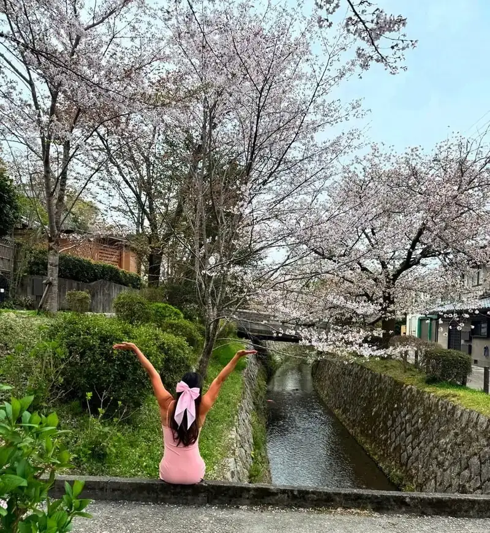
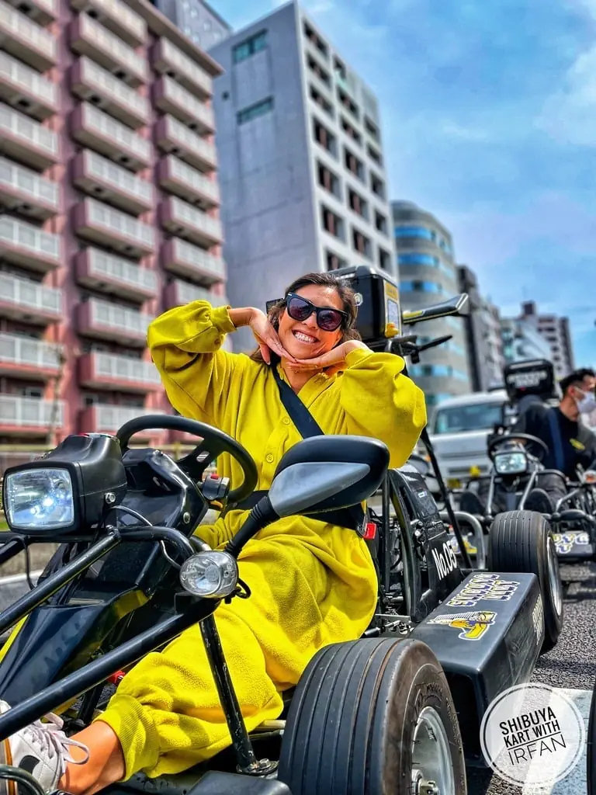

Japan, without the spreadsheet spiral
Your Japan travel advisor for a trip that actually feels like you
Tokyo neon, Kyoto mornings, an onsen with a Fuji view—and breathing room between them. I’m Vania, a Fora Travel advisor who has tested the multi-city Japan trip myself. Here’s how I plan yours.

Less checking boxes, more being there
A custom Japan itinerary, built around you
I know how tempting it is to save 200 reels and try to do everything. Japan rewards curiosity, but the logistics can take over: train routes, hotel locations, reservations that open at odd hours, and the question of whether one more city is one too many. As your Japan trip planner, I turn the wishlist into a trip with rhythm. We keep the places you care about, group days by neighborhood, and leave space for the little restaurant you find by wandering.
I ask what you actually want from this trip. Is it your first time in Japan? A honeymoon? A long-awaited return with your parents? Are you here for food, design, an onsen, the outdoors, or all of it? My own travels inform my suggestions; your priorities decide the route. No cookie-cutter itineraries.
Where to go—and why
Tokyo: choose your neighborhoods
Tokyo is a city of contrasts, not one big to-do list. Start with a few neighborhoods each day instead of crossing town for every meal. Try a slow morning in the gardens, lunch in a side street, then let the evening get louder in Shinjuku or Shibuya. I’ll match your hotel to the part of the city that makes sense for you, not just the photo you saved.
Kyoto: early mornings, quieter corners
Kyoto is worth getting out early for: temples before the crowds, a coffee stop, then time to get lost in the lanes. Fushimi Inari, Arashiyama and the historic districts can each be wonderful, but stacking them into one day is not. I’d rather help you pick a few places you can really enjoy—and make room for the food and small shops between them.
Osaka: an appetite is the itinerary
Osaka is playful, food-first and an easy contrast to Kyoto. Give it at least one evening if you can. Try the local specialties, follow the energy of the city, and don’t schedule every bite. Depending on your route, it can work as an overnight stop or a day trip; I’ll help you decide which feels less rushed.
Mt Fuji & Kawaguchiko: let the weather decide
Lake Kawaguchiko is one of my favorite ways to slow the pace. Think lake walks, bike rides, an onsen, and—when the clouds cooperate—a view of Mt Fuji. I’ve biked here myself. Fuji is famously shy, so don’t build your whole day around one photograph. An overnight gives you another chance at a clear morning and more time to enjoy the lake even if the mountain hides.
When’s the best season?
Cherry blossom season is generally late March through early April in Tokyo and Kyoto, but the exact bloom moves with the weather. Autumn leaves are typically at their best from late October into November, varying by region and altitude. Both are beautiful and busy: reserve hotels well ahead, expect premium rates, and build a trip you’d love even if the peak week shifts. Winter brings fewer crowds in many places; summer is hot and humid, with festivals and its own rewards.
A relaxed 10-day Japan trip: sample route
This is a starting point, not a prescription. Ten days goes quickly when you’re changing hotels; I’d rather give you a wonderful afternoon than a fifth city.
Days 1–3 · Tokyo
Land, get oriented, and explore by neighborhood. Give yourselves one flexible day for markets, a museum or the shopping street you stumble upon. Stay somewhere with easy train access.
Days 4–5 · Lake Kawaguchiko
Trade the city for lake air. Book a room or onsen stay you’d enjoy even without a Fuji view. Walk or cycle the shore, take an unhurried dinner, and look for the mountain in the morning.
Days 6–8 · Kyoto
Travel west and settle in. Put one temple visit early, save time for a tea break and an evening wander, and choose a day trip only if you want it. This is where a lighter schedule pays off.
Day 9 · Osaka
Go for the food and stay for the city. Dotonbori after dark is lively; seek out quieter places too. You could sleep in Osaka or return to Kyoto, depending on your departure airport.
Day 10 · The journey home
Leave buffer before your flight, especially if you have to cross cities. If you're flying out of Tokyo, we can shape the route differently or add a final night there.
What I handle as your Japan travel advisor
I build custom routes, help select and book hotels, map sensible transfers and train days, research experiences worth your time, and put the moving parts into an itinerary you can use on the road. Through Fora, qualifying luxury hotels may include complimentary breakfast, hotel credits, room upgrades when available and other partner perks. Perks vary by property and rate; I’ll show you what applies before you book. And when something changes while you travel, I’m here to help.
Traveling as a couple, with family, or celebrating something big? Tell me. The best Japan itinerary isn’t the one with the most pins—it’s the one you’re still talking about when you get home.
See how planning works · Read the FAQs · First-timer’s 10-day guide

A little about me
Multi-city Japan travel, tested by me
I’ve explored 22+ countries and I like a Michelin-star meal as much as street food. I go where the locals go, find nature even in a city, and always plan to do absolutely nothing at least once. It’s how the spontaneous stories happen.
Meet VaniaReady when you are
Ready for your own version of Japan?
Start with a conversation. I’ll ask what you love, what you don’t, and what you want this trip to feel like.